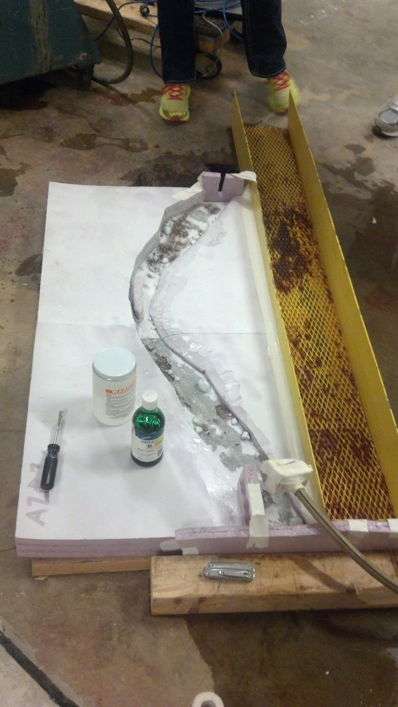

Courses in Stream Restoration
University of Michigan
Student Projects
Our team was tasked with designing an instream structure that would mitigate erosion of Millers Creek. We designed an island-rootwad system that would reduce the velocity of the water along the outer banks of the river thereby reducing erosion. Under a budget of 100 dollars, we designed and modelled our location and design using foam boards, epoxy, sand, and twigs. We introduced flood conditions onto the model and then added green die to qualitatively measure velocity. We noticed that under extreme conditions, our island-rootwad system decreased the velocity of the water along the outer bend. If we were given more time, we would move the island-rootwad system to various locations in order to determine the most efficient placement. In conclusion, the project was successful at decreasing velocity and mitigating erosion.